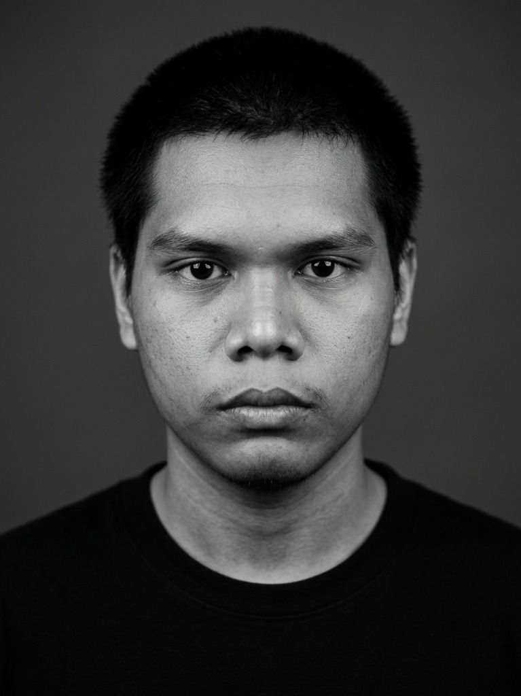

HI, I'M SANG
I'M A student

Pakawat Srirat
เทคโนโลยีสารสนเทศ
About me
สวัสดีครับผมชื่อนาย ภควัต ศรีรัตน์ ชื่อเล่นชื่อ ซัง ระดับประกาศนียบัตรวิชาชีพชั้นสูง (ปวส.) ที่อยู่บ้าน 19 หมู่.3 ต.ปากนคร จ.นครศรีธรรมราช 80000
ชอบเล่นบาส ชอบกินขนมหวาน สถานะ มีแฟนแล้ว
Education
ระดับประกาศนียบัตรวิชาชีพชั้นสูง (ปวส.) — แผนกวิชาเทคโนโลยีสารสนเทศ
แผนกวิชาเทคโนโลยีสารสนเทศ — เกรดเฉลี่ย (GPA): 3.88
ระดับประกาศนียบัตรวิชาชีพ (ปวช.) — แผนกวิชาเทคโนโลยีสารสนเทศ
แผนกวิชาเทคโนโลยีสารสนเทศ — เกรดเฉลี่ยสะสม (GPAX): 3.75
มัธยมศึกษาตอนต้น
โรงเรียนเทศบาลวัดท่าโพธิ์ — สำเร็จการศึกษาตามหลักสูตรการศึกษาขั้นพื้นฐาน
Motto
ความพยายามไม่เคยทรยศใคร ถ้าเราไม่หยุดพัฒนาตัวเอง
— คติพจน์ประจำใจในการดำเนินชีวิตและการทำงาน
Contacts
สามารถติดต่อสอบถาม พูดคุย หรือแลกเปลี่ยนความคิดเห็นได้ผ่านช่องทางด้านล่างนี้ครับ